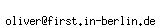

| GTK+ 2.0 Tutorial using Ocaml | ||
|---|---|---|
| <<< Previous | Next >>> | |
This document, like so much other great software out there, was created for free by volunteers. If you are at all knowledgeable about any aspect of GTK that does not already have documentation, please consider contributing to this document.
If you do decide to contribute, please contact via the Gtk+ developer-pages: https://www.gnome.org/contact/. Also, be aware that the entirety of this document is free, and any addition by you provide must also be free. That is, people may use any portion of your examples in their programs, and copies of this document may be distributed at will, etc.
Thank you.
This document, like so much other great software out there, was created for free by volunteers. If you are at all knowledgeable about any aspect of GTK that does not already have documentation, please consider contributing to this document.
If you do decide to contribute, please do it via GitHub: https://github.com/klartext/lablgtk2-ocaml-Tutorial. You can also send me email:  Also, be aware that the entirety of this document is free, and any addition by you provide must also be free. That is, people may use any portion of your examples in their programs, and copies of this document may be distributed at will, etc.
Thank you.
| <<< Previous | Home | Next >>> |
| The DrawingArea Widget, And Drawing | Credits |